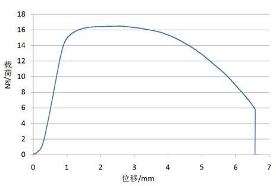

高温拉伸实验
通过对钛合金在高温拉伸破坏过程中的观察及其试验数据，了解其力学性能。了解液压式试验机的构造、原理和操作。 测定钛合金高温拉伸时的抗拉强度σb 、断后伸长率δ和断面收缩率ψ。 钛合金是航空航天工业中使用的一种新的重要结构材料。进行高温拉伸破坏实验时，首先应把材料制备成标准试样，然后在试验机上进行高温单向拉伸直至拉断。 本次实验在液压式试验机上进行，拉力由MTS力传感器测得，位移由线性可变位移传感器差分变压器（LVDT）测得，最后可以得出钛合金高温拉伸时的载荷-位移关系曲线。
图1.2 钛合金高温拉伸载荷-位移曲线